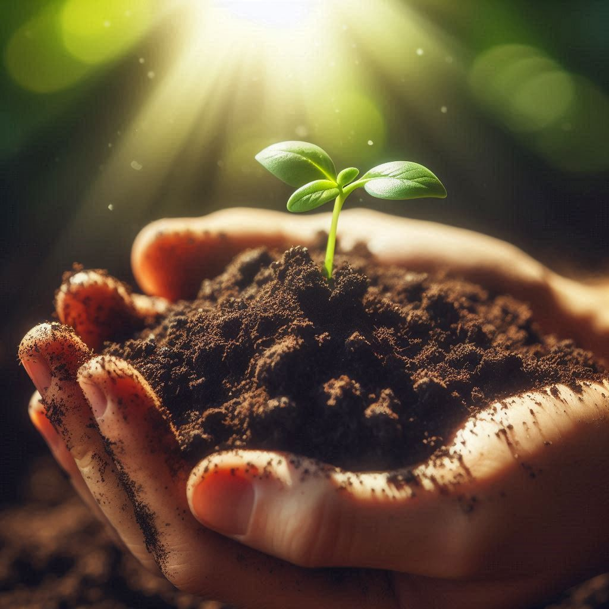
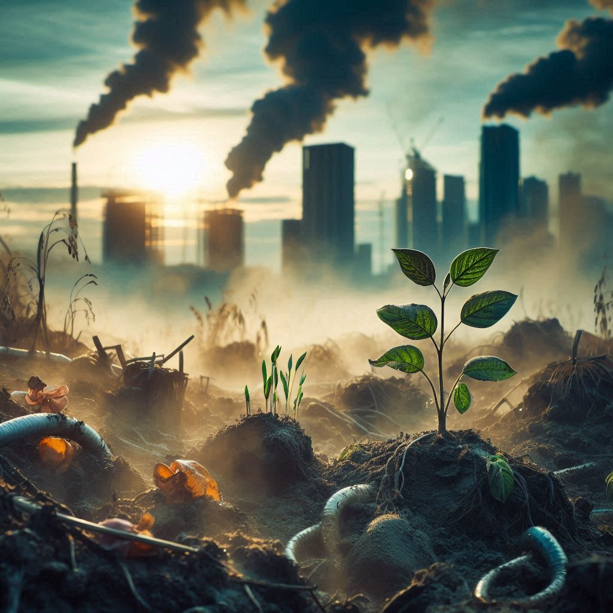
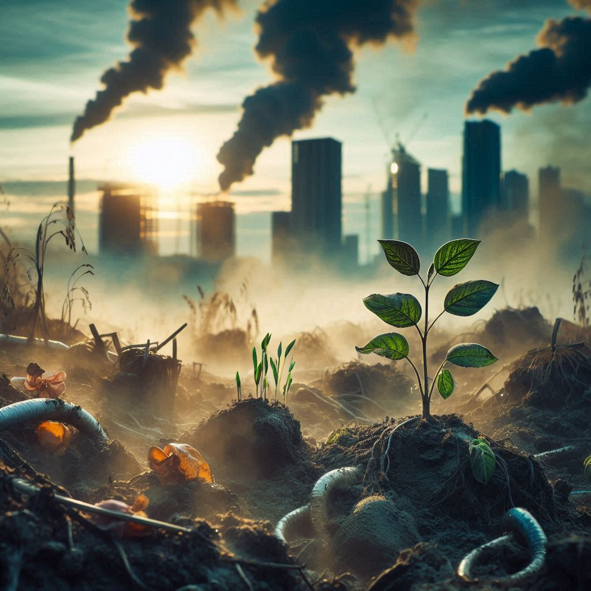
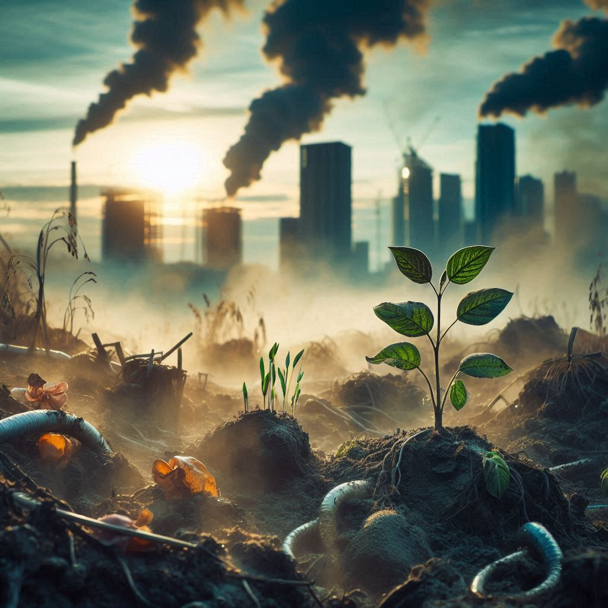

Soil pollution stems from industrial activities, agricultural practices, improper waste disposal, and urbanization.
Industries discharge toxic chemicals and heavy metals into soil via improper waste management.
Agricultural activities heavily contribute through excessive fertilizer and pesticide use, altering soil pH and fertility,
while runoff can carry pollutants into water bodies. Improper waste disposal, including landfills and hazardous material dumping, introduces organic pollutants, heavy metals, and pathogens into soil.
Urbanization leads to soil compaction and sealing, disrupting natural processes crucial for soil health. Construction activities also contribute through pollutants like oil spills and cement dust.
Mitigating soil pollution demands sustainable agriculture, improved waste management, stricter industrial regulations, and soil remediation efforts. By addressing soil pollution, we safeguard ecosystems, protect groundwater, and ensure sustainable land use for future generations.
SAVE SOIL
THE CHANGE STARTS WITH
YOU!

 

